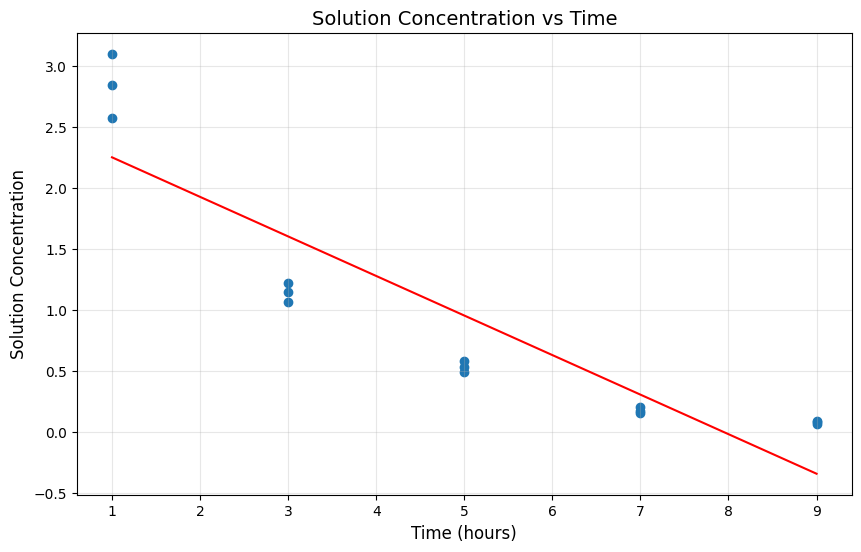
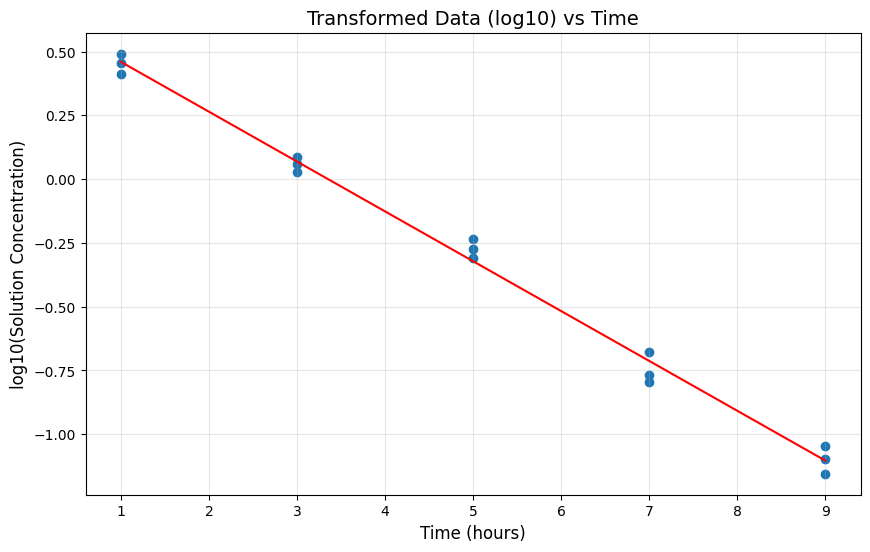
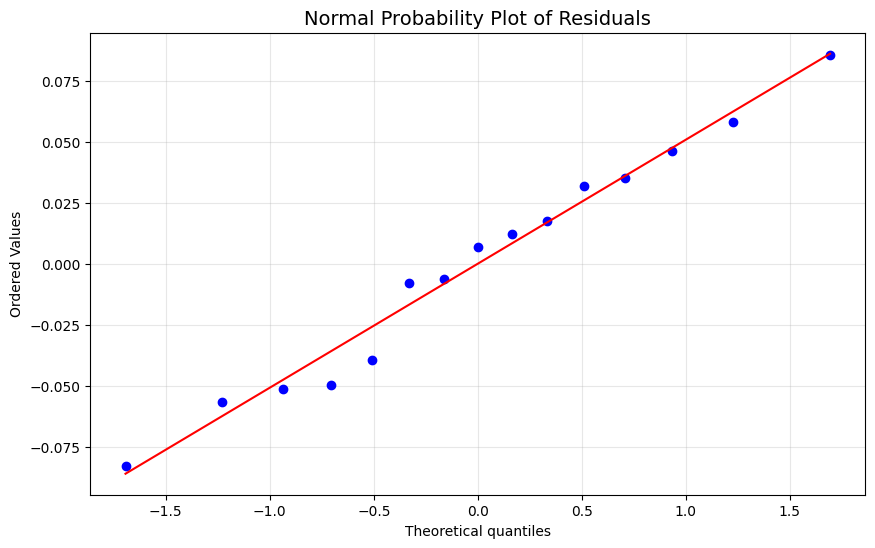
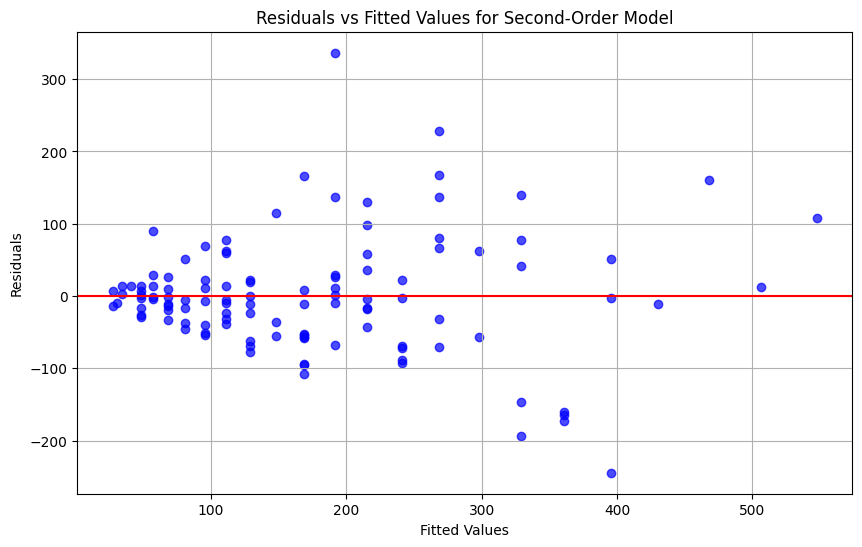
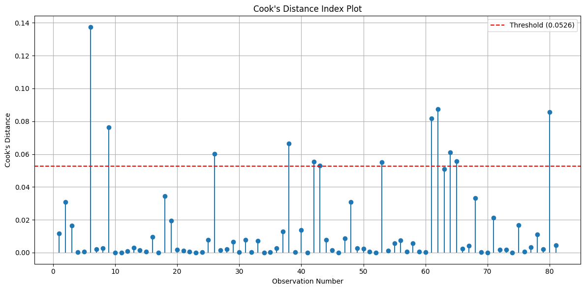

import pandas as pd
import numpy as np
import matplotlib.pyplot as plt
from scipy import stats
import statsmodels.formula.api as smf
import statsmodels.api as sm
from statsmodels.stats.outliers_influence import OLSInfluenceQuestion 3.15
data_1 = pd.read_csv('chapter3/CH03PR15.txt', header=None, sep='\s+')data_1.columns = ['Y', 'X']import pandas as pd
import numpy as np
import matplotlib.pyplot as plt
import scipy.stats as stats
import statsmodels.api as sm
from statsmodels.formula.api import ols
df = data_1
model = ols('Y ~ X', data=df).fit()
print(model.summary())
plt.figure(figsize=(10, 6))
plt.scatter(df['X'], df['Y'])
plt.plot(df['X'], model.predict(), color='red')
plt.xlabel('Time (hours)', fontsize=12)
plt.ylabel('Solution Concentration', fontsize=12)
plt.title('Solution Concentration vs Time', fontsize=14)
plt.grid(True, alpha=0.3)
plt.show()
X_means = df.groupby('X')['Y'].mean().reset_index()
print("\nMeans for each X level:")
print(X_means)
SSE_reduced = sum((df['Y'] - model.predict())**2)
SSE_pure = 0
for x_val in df['X'].unique():
y_values = df[df['X'] == x_val]['Y']
y_mean = y_values.mean()
SSE_pure += sum((y_values - y_mean)**2)
SS_lof = SSE_reduced - SSE_pure
df_lof = len(X_means) - 2
df_pe = len(df) - len(X_means)
MS_lof = SS_lof / df_lof
MS_pe = SSE_pure / df_pe
F_stat = model.fvalue
p_value = 1 - stats.f.cdf(F_stat, df_lof, df_pe)
alpha = 0.025
F_critical = stats.f.ppf(1-alpha, df_lof, df_pe)
print("\nLack of Fit Test:")
print(f"F statistic = {F_stat:.6f}")
print(f"p-value = {p_value:.6f}")
print(f"F critical (α = 0.025) = {F_critical:.6f}")
if F_stat > F_critical:
decision = "Reject H0"
conclusion = "There is significant lack of fit in the linear model."
else:
decision = "Fail to reject H0"
conclusion = "There is not enough evidence to conclude lack of fit in the linear model."
print("\nHypothesis Test:")
print("H0: The linear model is adequate (no lack of fit)")
print("H1: The linear model is not adequate (there is lack of fit)")
print(f"Decision Rule: Reject H0 if F > {F_critical:.6f}")
print(f"Decision: {decision}")
print(f"Conclusion: {conclusion}")
OLS Regression Results
==============================================================================
Dep. Variable: Y R-squared: 0.812
Model: OLS Adj. R-squared: 0.797
Method: Least Squares F-statistic: 55.99
Date: Wed, 12 Mar 2025 Prob (F-statistic): 4.61e-06
Time: 17:48:55 Log-Likelihood: -9.0225
No. Observations: 15 AIC: 22.05
Df Residuals: 13 BIC: 23.46
Df Model: 1
Covariance Type: nonrobust
==============================================================================
coef std err t P>|t| [0.025 0.975]
------------------------------------------------------------------------------
Intercept 2.5753 0.249 10.354 0.000 2.038 3.113
X -0.3240 0.043 -7.483 0.000 -0.418 -0.230
==============================================================================
Omnibus: 2.990 Durbin-Watson: 0.717
Prob(Omnibus): 0.224 Jarque-Bera (JB): 1.428
Skew: 0.412 Prob(JB): 0.490
Kurtosis: 1.733 Cond. No. 11.9
==============================================================================
Notes:
[1] Standard Errors assume that the covariance matrix of the errors is correctly specified.
Means for each X level:
X Y
0 1.0 2.836667
1 3.0 1.146667
2 5.0 0.533333
3 7.0 0.180000
4 9.0 0.080000
Lack of Fit Test:
F statistic = 55.993836
p-value = 0.000001
F critical (α = 0.025) = 4.825621
Hypothesis Test:
H0: The linear model is adequate (no lack of fit)
H1: The linear model is not adequate (there is lack of fit)
Decision Rule: Reject H0 if F > 4.825621
Decision: Reject H0
Conclusion: There is significant lack of fit in the linear model./Users/pedro/anaconda3/lib/python3.11/site-packages/scipy/stats/_axis_nan_policy.py:418: UserWarning: `kurtosistest` p-value may be inaccurate with fewer than 20 observations; only n=15 observations were given.
return hypotest_fun_in(*args, **kwds)
lambda_values = [-2.0, -1.0, -0.5, 0.0, 0.1, 0.2, 0.5, 1.0]
sse_values = []
K2 = np.exp(np.mean(np.log(df['Y'])))
for lamb in lambda_values:
if lamb == 0:
y_transformed = K2 * np.log(df['Y'])
else:
K1 = 1 / (lamb * (K2**(lamb-1)))
y_transformed = K1 * (df['Y']**lamb - 1)
X_const = sm.add_constant(df['X'])
model_transformed = sm.OLS(y_transformed, X_const).fit()
sse_values.append(model_transformed.ssr)
lambda_results = pd.DataFrame({
'Lambda': lambda_values,
'SSE': sse_values
})
print("\nBox-Cox Transformation Results:")
print(lambda_results)
df['Y_log'] = np.log10(df['Y'])
log_model = ols('Y_log ~ X', data=df).fit()
print("\nLog10 Transformation Regression Model Summary:")
print(log_model.summary())
b0_log = log_model.params[0]
b1_log = log_model.params[1]
print(f"Estimated Regression Function (transformed): Y' = {b0_log:.4f} + ({b1_log:.4f} * X)")
plt.figure(figsize=(10, 6))
plt.scatter(df['X'], df['Y_log'])
plt.plot(df['X'], log_model.predict(), color='red')
plt.xlabel('Time (hours)', fontsize=12)
plt.ylabel('log10(Solution Concentration)', fontsize=12)
plt.title('Transformed Data (log10) vs Time', fontsize=14)
plt.grid(True, alpha=0.3)
plt.show()
df['fitted_values_log'] = log_model.predict()
df['residuals_log'] = log_model.resid
plt.figure(figsize=(10, 6))
plt.scatter(df['fitted_values_log'], df['residuals_log'])
plt.axhline(y=0, color='r', linestyle='-')
plt.xlabel('Fitted Values', fontsize=12)
plt.ylabel('Residuals', fontsize=12)
plt.title('Residuals vs Fitted Values (Log Transformation)', fontsize=14)
plt.grid(True, alpha=0.3)
plt.show()
plt.figure(figsize=(10, 6))
stats.probplot(df['residuals_log'], dist="norm", plot=plt)
plt.title('Normal Probability Plot of Residuals', fontsize=14)
plt.grid(True, alpha=0.3)
plt.show()
print(f"Transformed model: log10(Y) = {b0_log:.4f} + ({b1_log:.4f} * X)")
print(f"Original units: Y = 10^({b0_log:.4f} + ({b1_log:.4f} * X))")
print(f"Simplified: Y = {10**b0_log:.4f} * 10^({b1_log:.4f} * X)")
Box-Cox Transformation Results:
Lambda SSE
0 -2.0 68.842805
1 -1.0 3.168468
2 -0.5 0.550847
3 0.0 0.038973
4 0.1 0.043961
5 0.2 0.081318
6 0.5 0.444294
7 1.0 2.924653
Log10 Transformation Regression Model Summary:
OLS Regression Results
==============================================================================
Dep. Variable: Y_log R-squared: 0.993
Model: OLS Adj. R-squared: 0.992
Method: Least Squares F-statistic: 1838.
Date: Wed, 12 Mar 2025 Prob (F-statistic): 2.19e-15
Time: 18:07:56 Log-Likelihood: 24.748
No. Observations: 15 AIC: -45.50
Df Residuals: 13 BIC: -44.08
Df Model: 1
Covariance Type: nonrobust
==============================================================================
coef std err t P>|t| [0.025 0.975]
------------------------------------------------------------------------------
Intercept 0.6549 0.026 25.014 0.000 0.598 0.711
X -0.1954 0.005 -42.875 0.000 -0.205 -0.186
==============================================================================
Omnibus: 0.502 Durbin-Watson: 1.580
Prob(Omnibus): 0.778 Jarque-Bera (JB): 0.542
Skew: -0.043 Prob(JB): 0.763
Kurtosis: 2.073 Cond. No. 11.9
==============================================================================
Notes:
[1] Standard Errors assume that the covariance matrix of the errors is correctly specified.
Estimated Regression Function (transformed): Y' = 0.6549 + (-0.1954 * X)
Transformed model: log10(Y) = 0.6549 + (-0.1954 * X)
Original units: Y = 10^(0.6549 + (-0.1954 * X))
Simplified: Y = 4.5173 * 10^(-0.1954 * X)/Users/pedro/anaconda3/lib/python3.11/site-packages/scipy/stats/_axis_nan_policy.py:418: UserWarning: `kurtosistest` p-value may be inaccurate with fewer than 20 observations; only n=15 observations were given.
return hypotest_fun_in(*args, **kwds)
/var/folders/52/y8mfvm1n6vj12ntkl_p9hqw80000gn/T/ipykernel_53726/3215373057.py:33: FutureWarning: Series.__getitem__ treating keys as positions is deprecated. In a future version, integer keys will always be treated as labels (consistent with DataFrame behavior). To access a value by position, use `ser.iloc[pos]`
b0_log = log_model.params[0]
/var/folders/52/y8mfvm1n6vj12ntkl_p9hqw80000gn/T/ipykernel_53726/3215373057.py:34: FutureWarning: Series.__getitem__ treating keys as positions is deprecated. In a future version, integer keys will always be treated as labels (consistent with DataFrame behavior). To access a value by position, use `ser.iloc[pos]`
b1_log = log_model.params[1]


Question 8.38
data_c1 = pd.read_csv('Appendix C Data Sets/APPENC01.txt', header=None, sep='\s+')data_c1.drop(0, axis='columns')
data_c1 = data_c1.loc[:, [10,11]]data_c1.columns = ["Y", "X"]import pandas as pd
import numpy as np
import matplotlib.pyplot as plt
import statsmodels.api as sm
from statsmodels.formula.api import ols
import scipy.stats as stats
data_c1['X_squared'] = data_c1['X'] ** 2
def hr(char="-", length=80):
return char * length
def print_section(title):
print("\n" + hr("="))
print(title.center(80))
print(hr("="))
print_section("PART (a): SECOND-ORDER REGRESSION MODEL")
second_order_model = ols('Y ~ X + X_squared', data=data_c1).fit()
fitted_values = second_order_model.fittedvalues
residuals = second_order_model.resid
b0 = second_order_model.params['Intercept']
b1 = second_order_model.params['X']
b2 = second_order_model.params['X_squared']
print(f"\nSecond-Order Model: Y = {b0:.4f} + {b1:.4f}X + {b2:.6f}X²")
print("\nModel Summary:")
print(second_order_model.summary())
plt.figure(figsize=(10, 6))
plt.scatter(fitted_values, residuals, color='blue', alpha=0.7)
plt.axhline(y=0, color='r', linestyle='-')
plt.xlabel('Fitted Values')
plt.ylabel('Residuals')
plt.title('Residuals vs Fitted Values for Second-Order Model')
plt.grid(True)
plt.show()
first_order_model = ols('Y ~ X', data=data_c1).fit()
b0_first = first_order_model.params['Intercept']
b1_first = first_order_model.params['X']
r_squared_second = second_order_model.rsquared
r_squared_first = first_order_model.rsquared
adj_r_squared_second = second_order_model.rsquared_adj
adj_r_squared_first = first_order_model.rsquared_adj
print(f"\nFirst-Order Model: Y = {b0_first:.4f} + {b1_first:.4f}X")
print(f" - R² for first-order model: {r_squared_first:.4f}")
print(f" - Adjusted R² for first-order model: {adj_r_squared_first:.4f}")
print(f"\nSecond-Order Model: Y = {b0:.4f} + {b1:.4f}X + {b2:.6f}X²")
print(f" - R² for second-order model: {r_squared_second:.4f}")
print(f" - Adjusted R² for second-order model: {adj_r_squared_second:.4f}")
print(f"\nComparison:")
print(f" - Absolute increase in R²: {r_squared_second - r_squared_first:.4f}")
print(f" - Percentage increase: {(r_squared_second - r_squared_first) / r_squared_first * 100:.2f}%")
alpha = 0.01
quad_coef = second_order_model.params['X_squared']
quad_std_err = second_order_model.bse['X_squared']
quad_t_value = second_order_model.tvalues['X_squared']
quad_p_value = second_order_model.pvalues['X_squared']
degrees_freedom = second_order_model.df_resid
critical_t = stats.t.ppf(1 - alpha/2, degrees_freedom)
reject_null = abs(quad_t_value) > critical_t or quad_p_value < alpha
print("\nHypothesis Test:")
print(" H₀: β₂ = 0 (The quadratic term is not needed)")
print(" H₁: β₂ ≠ 0 (The quadratic term is needed)")
ssr_first = first_order_model.ssr
ssr_second = second_order_model.ssr
f_stat = ((ssr_first - ssr_second) / 1) / (ssr_second / degrees_freedom)
p_value_f = 1 - stats.f.cdf(f_stat, 1, degrees_freedom)
print("\nAlternative F-test Approach:")
print(f" - F-statistic: {f_stat:.4f}")
print(f" - p-value: {p_value_f:.6f}")
print(f" - Decision rule: Reject H₀ if p-value < {alpha}")
print(f" - Decision: {'REJECT' if p_value_f < alpha else 'FAIL TO REJECT'} the null hypothesis")
================================================================================
PART (a): SECOND-ORDER REGRESSION MODEL
================================================================================
Second-Order Model: Y = 33.5482 + -1.6661X + 0.101164X²
Model Summary:
OLS Regression Results
==============================================================================
Dep. Variable: Y R-squared: 0.657
Model: OLS Adj. R-squared: 0.651
Method: Least Squares F-statistic: 105.3
Date: Wed, 12 Mar 2025 Prob (F-statistic): 2.79e-26
Time: 18:57:04 Log-Likelihood: -657.20
No. Observations: 113 AIC: 1320.
Df Residuals: 110 BIC: 1329.
Df Model: 2
Covariance Type: nonrobust
==============================================================================
coef std err t P>|t| [0.025 0.975]
------------------------------------------------------------------------------
Intercept 33.5482 51.414 0.653 0.515 -68.343 135.439
X -1.6661 2.435 -0.684 0.495 -6.491 3.159
X_squared 0.1012 0.027 3.716 0.000 0.047 0.155
==============================================================================
Omnibus: 17.985 Durbin-Watson: 1.822
Prob(Omnibus): 0.000 Jarque-Bera (JB): 41.675
Skew: 0.564 Prob(JB): 8.92e-10
Kurtosis: 5.753 Cond. No. 1.66e+04
==============================================================================
Notes:
[1] Standard Errors assume that the covariance matrix of the errors is correctly specified.
[2] The condition number is large, 1.66e+04. This might indicate that there are
strong multicollinearity or other numerical problems.
First-Order Model: Y = -136.5593 + 7.1782X
- R² for first-order model: 0.6139
- Adjusted R² for first-order model: 0.6104
Second-Order Model: Y = 33.5482 + -1.6661X + 0.101164X²
- R² for second-order model: 0.6569
- Adjusted R² for second-order model: 0.6507
Comparison:
- Absolute increase in R²: 0.0431
- Percentage increase: 7.01%
Hypothesis Test:
H₀: β₂ = 0 (The quadratic term is not needed)
H₁: β₂ ≠ 0 (The quadratic term is needed)
Alternative F-test Approach:
- F-statistic: 13.8065
- p-value: 0.000320
- Decision rule: Reject H₀ if p-value < 0.01
- Decision: REJECT the null hypothesis
Question 10.12
data = pd.read_csv('chapter6/CH06PR18.txt', header=None, sep='\s+')
data.columns = ["Y", "X_1", "X_2", "X_3", "X_4"]
print(data.head())
X = data[["X_1", "X_2", "X_3", "X_4"]]
y = data["Y"]
X_with_const = sm.add_constant(X)
model = sm.OLS(y, X_with_const).fit()
influence = OLSInfluence(model)
n = len(data)
p = X_with_const.shape[1]
print("\nNumber of observations (n):", n)
print("Number of parameters (p):", p)
print("\nModel Summary:")
print(model.summary().tables[1])
# =============================================================================
# a. Studentized deleted residuals and Bonferroni outlier test
# =============================================================================
print("\n" + "="*80)
print("a. STUDENTIZED DELETED RESIDUALS AND BONFERRONI OUTLIER TEST")
print("="*80)
studentized_residuals = influence.resid_studentized_external
alpha = 0.01
bonf_alpha = alpha / (2 * n)
critical_value = stats.t.ppf(1 - bonf_alpha, n - p - 1)
print("\nHYPOTHESIS TEST:")
print("-"*50)
print("H₀: No outliers among Y observations")
print("H₁: At least one outlier among Y observations")
print(f"Test Statistic: max|t_i| where t_i are studentized deleted residuals")
print(f"Significance Level: α = {alpha}")
print(f"Bonferroni Adjusted Alpha: α/(2n) = {bonf_alpha:.6f}")
print(f"Critical Value: t(1-α/(2n), n-p-1) = {critical_value:.4f}")
print(f"Decision Rule: Reject H₀ if max|t_i| > {critical_value:.4f}")
max_abs_resid = np.max(np.abs(studentized_residuals))
outliers = np.abs(studentized_residuals) > critical_value
outlier_indices = np.where(outliers)[0]
print("\nRESULTS:")
print("-"*50)
print(f"Maximum Absolute Studentized Deleted Residual: {max_abs_resid:.4f}")
print("\nOutlying Y observations:")
if len(outlier_indices) > 0:
for idx in outlier_indices:
print(f"Observation {idx+1}: Studentized Residual = {studentized_residuals[idx]:.4f}")
print(f"\nCONCLUSION: Reject H₀. Observations {', '.join([str(idx+1) for idx in outlier_indices])} are outliers based on the Bonferroni test at α = .01")
else:
print("No outliers detected")
print("\nCONCLUSION: Fail to reject H₀. No outliers detected based on the Bonferroni test at α = .01") Y X_1 X_2 X_3 X_4
0 13.5 1 5.02 0.14 123000
1 12.0 14 8.19 0.27 104079
2 10.5 16 3.00 0.00 39998
3 15.0 4 10.70 0.05 57112
4 14.0 11 8.97 0.07 60000
Number of observations (n): 81
Number of parameters (p): 5
Model Summary:
==============================================================================
coef std err t P>|t| [0.025 0.975]
------------------------------------------------------------------------------
const 12.2006 0.578 21.110 0.000 11.049 13.352
X_1 -0.1420 0.021 -6.655 0.000 -0.185 -0.100
X_2 0.2820 0.063 4.464 0.000 0.156 0.408
X_3 0.6193 1.087 0.570 0.570 -1.545 2.784
X_4 7.924e-06 1.38e-06 5.722 0.000 5.17e-06 1.07e-05
==============================================================================
================================================================================
a. STUDENTIZED DELETED RESIDUALS AND BONFERRONI OUTLIER TEST
================================================================================
HYPOTHESIS TEST:
--------------------------------------------------
H₀: No outliers among Y observations
H₁: At least one outlier among Y observations
Test Statistic: max|t_i| where t_i are studentized deleted residuals
Significance Level: α = 0.01
Bonferroni Adjusted Alpha: α/(2n) = 0.000062
Critical Value: t(1-α/(2n), n-p-1) = 4.0503
Decision Rule: Reject H₀ if max|t_i| > 4.0503
RESULTS:
--------------------------------------------------
Maximum Absolute Studentized Deleted Residual: 3.0721
Outlying Y observations:
No outliers detected
CONCLUSION: Fail to reject H₀. No outliers detected based on the Bonferroni test at α = .01print("\n" + "="*80)
print("b. HAT MATRIX DIAGONAL ELEMENTS")
print("="*80)
leverage = influence.hat_matrix_diag
leverage_threshold = 2 * p / n
print(f"\nAverage Leverage: p/n = {p/n:.4f}")
print(f"High Leverage: 2p/n = {leverage_threshold:.4f}")
high_leverage = leverage > leverage_threshold
high_leverage_indices = np.where(high_leverage)[0]
print("\nRESULTS:")
print("-"*50)
print("\nOutlying X observations (high leverage points):")
if len(high_leverage_indices) > 0:
for idx in high_leverage_indices:
print(f"Observation {idx+1}: Leverage = {leverage[idx]:.4f}")
print(f"\nCONCLUSION: Observations {', '.join([str(idx+1) for idx in high_leverage_indices])} are identified as outlying X observations")
else:
print("No high leverage points detected")
print("\nCONCLUSION: No outlying X observations detected")
================================================================================
b. HAT MATRIX DIAGONAL ELEMENTS
================================================================================
Average Leverage: p/n = 0.0617
High Leverage: 2p/n = 0.1235
RESULTS:
--------------------------------------------------
Outlying X observations (high leverage points):
Observation 3: Leverage = 0.1953
Observation 8: Leverage = 0.2022
Observation 53: Leverage = 0.1792
Observation 61: Leverage = 0.3037
Observation 65: Leverage = 0.1291
CONCLUSION: Observations 3, 8, 53, 61, 65 are identified as outlying X observationsprint("\n" + "="*80)
print("c. HIDDEN EXTRAPOLATION CHECK")
print("="*80)
new_obs_values = [10, 12.00, 0.05, 350000]
print("\nProperty Characteristics:")
print(f"Age: {new_obs_values[0]} years")
print(f"Operating Expenses and Taxes: {new_obs_values[1]}")
print(f"Occupancy Rate: {new_obs_values[2]}")
print(f"Square Footage: {new_obs_values[3]}")
print('Perform direct leverage calculation')
new_obs = np.array([1] + new_obs_values)
X_transpose_X_inv = np.linalg.inv(X_with_const.T @ X_with_const)
h_new = np.dot(np.dot(new_obs, X_transpose_X_inv), new_obs)
print("\nRESULTS:")
print("-"*50)
print(f"Leverage value for new observation (h00): {h_new:.4f}")
print(f"Threshold for high leverage (2p/n): {leverage_threshold:.4f}")
if h_new > leverage_threshold:
print("\nCONCLUSION: This estimate will involve hidden extrapolation because the leverage value exceeds the threshold.")
else:
print("\nCONCLUSION: This estimate will not involve hidden extrapolation because the leverage\n value is below the threshold.")
================================================================================
c. HIDDEN EXTRAPOLATION CHECK
================================================================================
Property Characteristics:
Age: 10 years
Operating Expenses and Taxes: 12.0
Occupancy Rate: 0.05
Square Footage: 350000
Perform direct leverage calculation
RESULTS:
--------------------------------------------------
Leverage value for new observation (h00): 0.0529
Threshold for high leverage (2p/n): 0.1235
CONCLUSION: This estimate will not involve hidden extrapolation because the leverage
value is below the threshold.print("\n" + "="*80)
print("d. INFLUENCE MEASURES FOR SPECIFIC CASES")
print("="*80)
outlying_X_cases = [61, 8, 3, 53]
outlying_Y_cases = [6, 62]
cases_of_interest = outlying_X_cases + outlying_Y_cases
cases_0_indexed = [case-1 for case in cases_of_interest]
dffits = influence.dffits
dfbetas = influence.dfbetas
cooks_d = influence.cooks_distance[0]
if isinstance(dffits, tuple):
dffits = dffits[0]
dffits_threshold = 2 * np.sqrt(p / n)
dfbetas_threshold = 2 / np.sqrt(n)
cooks_d_threshold = 4 / (n - p)
print("\nThresholds for Influence Measures:")
print(f"DFFITS: |DFFITS| > {dffits_threshold:.4f}")
print(f"DFBETAS: |DFBETAS| > {dfbetas_threshold:.4f}")
print(f"Cook's Distance: Di > {cooks_d_threshold:.4f}")
print("\nRESULTS:")
print("-"*50)
print("\nInfluence Measures Summary Table:")
print("-"*90)
print(f"{'Case':<6} | {'DFFITS':<10} | {'DFBETAS(Int)':<12} | {'DFBETAS(X1)':<12} | {'DFBETAS(X2)':<12} | {'DFBETAS(X3)':<12} | {'DFBETAS(X4)':<12} | {'Cooks D':<10}")
print("-"*90)
for case in cases_of_interest:
case_idx = case - 1
dfbetas_vals = [dfbetas[case_idx, j] for j in range(5)]
row = f"{case:<6} | {dffits[case_idx]:<10.4f} | "
for val in dfbetas_vals:
row += f"{val:<12.4f} | "
row += f"{cooks_d[case_idx]:<10.4f}"
print(row)
print("-"*90)
print("\nDetailed Assessment:")
for case in cases_of_interest:
case_idx = case - 1
print(f"\nCase {case}:")
print(f" DFFITS: {dffits[case_idx]:.4f}")
if abs(dffits[case_idx]) > dffits_threshold:
print(f" - Influential based on DFFITS (|DFFITS| > {dffits_threshold:.4f})")
else:
print(f" - Not influential based on DFFITS")
print(" DFBETAS:")
dfbetas_influential = False
for j in range(X_with_const.shape[1]):
param_name = f"X_{j-1}" if j > 0 else "Intercept"
print(f" {param_name}: {dfbetas[case_idx, j]:.4f}")
if abs(dfbetas[case_idx, j]) > dfbetas_threshold:
print(f" - Influential for {param_name} parameter (|DFBETAS| > {dfbetas_threshold:.4f})")
dfbetas_influential = True
if not dfbetas_influential:
print(" - Not influential based on DFBETAS for any parameter")
print(f" Cook's Distance: {cooks_d[case_idx]:.4f}")
if cooks_d[case_idx] > cooks_d_threshold:
print(f" - Influential based on Cook's Distance (Di > {cooks_d_threshold:.4f})")
else:
print(f" - Not influential based on Cook's Distance")
print("\nOVERALL CONCLUSION:")
print("-"*50)
influential_cases = []
for case in cases_of_interest:
case_idx = case - 1
if (abs(dffits[case_idx]) > dffits_threshold or
any(abs(dfbetas[case_idx, j]) > dfbetas_threshold for j in range(X_with_const.shape[1])) or
cooks_d[case_idx] > cooks_d_threshold):
influential_cases.append(case)
if influential_cases:
print(f"Cases {', '.join(map(str, influential_cases))} are influential based on at least one measure.")
else:
print("None of the specified cases are influential based on the influence measures.")
================================================================================
d. INFLUENCE MEASURES FOR SPECIFIC CASES
================================================================================
Thresholds for Influence Measures:
DFFITS: |DFFITS| > 0.4969
DFBETAS: |DFBETAS| > 0.2222
Cook's Distance: Di > 0.0526
RESULTS:
--------------------------------------------------
Influence Measures Summary Table:
------------------------------------------------------------------------------------------
Case | DFFITS | DFBETAS(Int) | DFBETAS(X1) | DFBETAS(X2) | DFBETAS(X3) | DFBETAS(X4) | Cooks D
------------------------------------------------------------------------------------------
61 | 0.6387 | -0.0554 | 0.0242 | -0.0076 | 0.5457 | 0.0038 | 0.0817
8 | 0.1164 | -0.0142 | -0.0072 | 0.0030 | 0.0955 | 0.0126 | 0.0027
3 | -0.2843 | -0.2318 | -0.1553 | 0.2364 | 0.1008 | -0.0115 | 0.0163
53 | 0.5252 | -0.0196 | -0.0240 | -0.0243 | 0.4180 | 0.0490 | 0.0550
6 | -0.8735 | 0.1951 | -0.5649 | -0.1767 | -0.6172 | 0.4482 | 0.1374
62 | 0.6903 | 0.2758 | -0.3335 | -0.2595 | 0.0627 | 0.4051 | 0.0875
------------------------------------------------------------------------------------------
Detailed Assessment:
Case 61:
DFFITS: 0.6387
- Influential based on DFFITS (|DFFITS| > 0.4969)
DFBETAS:
Intercept: -0.0554
X_0: 0.0242
X_1: -0.0076
X_2: 0.5457
- Influential for X_2 parameter (|DFBETAS| > 0.2222)
X_3: 0.0038
Cook's Distance: 0.0817
- Influential based on Cook's Distance (Di > 0.0526)
Case 8:
DFFITS: 0.1164
- Not influential based on DFFITS
DFBETAS:
Intercept: -0.0142
X_0: -0.0072
X_1: 0.0030
X_2: 0.0955
X_3: 0.0126
- Not influential based on DFBETAS for any parameter
Cook's Distance: 0.0027
- Not influential based on Cook's Distance
Case 3:
DFFITS: -0.2843
- Not influential based on DFFITS
DFBETAS:
Intercept: -0.2318
- Influential for Intercept parameter (|DFBETAS| > 0.2222)
X_0: -0.1553
X_1: 0.2364
- Influential for X_1 parameter (|DFBETAS| > 0.2222)
X_2: 0.1008
X_3: -0.0115
Cook's Distance: 0.0163
- Not influential based on Cook's Distance
Case 53:
DFFITS: 0.5252
- Influential based on DFFITS (|DFFITS| > 0.4969)
DFBETAS:
Intercept: -0.0196
X_0: -0.0240
X_1: -0.0243
X_2: 0.4180
- Influential for X_2 parameter (|DFBETAS| > 0.2222)
X_3: 0.0490
Cook's Distance: 0.0550
- Influential based on Cook's Distance (Di > 0.0526)
Case 6:
DFFITS: -0.8735
- Influential based on DFFITS (|DFFITS| > 0.4969)
DFBETAS:
Intercept: 0.1951
X_0: -0.5649
- Influential for X_0 parameter (|DFBETAS| > 0.2222)
X_1: -0.1767
X_2: -0.6172
- Influential for X_2 parameter (|DFBETAS| > 0.2222)
X_3: 0.4482
- Influential for X_3 parameter (|DFBETAS| > 0.2222)
Cook's Distance: 0.1374
- Influential based on Cook's Distance (Di > 0.0526)
Case 62:
DFFITS: 0.6903
- Influential based on DFFITS (|DFFITS| > 0.4969)
DFBETAS:
Intercept: 0.2758
- Influential for Intercept parameter (|DFBETAS| > 0.2222)
X_0: -0.3335
- Influential for X_0 parameter (|DFBETAS| > 0.2222)
X_1: -0.2595
- Influential for X_1 parameter (|DFBETAS| > 0.2222)
X_2: 0.0627
X_3: 0.4051
- Influential for X_3 parameter (|DFBETAS| > 0.2222)
Cook's Distance: 0.0875
- Influential based on Cook's Distance (Di > 0.0526)
OVERALL CONCLUSION:
--------------------------------------------------
Cases 61, 3, 53, 6, 62 are influential based on at least one measure.print("\n" + "="*80)
print("e. AVERAGE ABSOLUTE PERCENT DIFFERENCE IN FITTED VALUES")
print("="*80)
print("\nCalculating how fitted values change when each case is removed...")
fitted_all = model.fittedvalues
avg_abs_pct_diff = {}
for case in cases_of_interest:
case_idx = case - 1
mask = np.ones(len(data), dtype=bool)
mask[case_idx] = False
X_without_case = X_with_const[mask]
y_without_case = y[mask]
model_without_case = sm.OLS(y_without_case, X_without_case).fit()
fitted_without_case = model_without_case.predict(X_with_const)
abs_pct_diff = np.abs((fitted_all - fitted_without_case) / fitted_all * 100)
avg_diff = np.mean(abs_pct_diff)
avg_abs_pct_diff[case] = avg_diff
print("\nRESULTS:")
print("-"*50)
print("\nAverage Absolute Percent Difference in Fitted Values:")
print("-"*60)
print(f"{'Case':<6} | {'Average Difference (%)':<25} | {'Influence'}")
print("-"*60)
for case, avg_diff in avg_abs_pct_diff.items():
influence_level = "Substantial" if avg_diff > 1 else "Minimal"
print(f"{case:<6} | {avg_diff:<25.4f} | {influence_level}")
print("-"*60)
print("\nINTERPRETATION:")
print("-"*50)
for case, avg_diff in avg_abs_pct_diff.items():
if avg_diff > 1:
print(f"Case {case} has substantial influence on fitted values (average difference: {avg_diff:.4f}%)")
else:
print(f"Case {case} has minimal influence on fitted values (average difference: {avg_diff:.4f}%)")
================================================================================
e. AVERAGE ABSOLUTE PERCENT DIFFERENCE IN FITTED VALUES
================================================================================
Calculating how fitted values change when each case is removed...
RESULTS:
--------------------------------------------------
Average Absolute Percent Difference in Fitted Values:
------------------------------------------------------------
Case | Average Difference (%) | Influence
------------------------------------------------------------
61 | 0.3002 | Minimal
8 | 0.0544 | Minimal
3 | 0.1926 | Minimal
53 | 0.2347 | Minimal
6 | 0.5563 | Minimal
62 | 0.4168 | Minimal
------------------------------------------------------------
INTERPRETATION:
--------------------------------------------------
Case 61 has minimal influence on fitted values (average difference: 0.3002%)
Case 8 has minimal influence on fitted values (average difference: 0.0544%)
Case 3 has minimal influence on fitted values (average difference: 0.1926%)
Case 53 has minimal influence on fitted values (average difference: 0.2347%)
Case 6 has minimal influence on fitted values (average difference: 0.5563%)
Case 62 has minimal influence on fitted values (average difference: 0.4168%)print("\n" + "="*80)
print("f. COOK'S DISTANCE INDEX PLOT AND INFLUENTIAL CASES")
print("="*80)
cooks_d_all = influence.cooks_distance[0]
# Plot Cook's distance
plt.figure(figsize=(12, 6))
plt.stem(range(1, n+1), cooks_d_all, markerfmt='o', basefmt=' ')
plt.axhline(y=cooks_d_threshold, color='r', linestyle='--', label=f'Threshold ({cooks_d_threshold:.4f})')
plt.xlabel('Observation Number')
plt.ylabel("Cook's Distance")
plt.title("Cook's Distance Index Plot")
plt.legend()
plt.grid(True)
plt.tight_layout()
plt.savefig('cooks_distance_plot.png')
influential_indices = np.where(cooks_d_all > cooks_d_threshold)[0]
print("\nThreshold for Influential Cases:")
print(f"Cook's Distance: Di > {cooks_d_threshold:.4f}")
print("\nRESULTS:")
print("-"*50)
if len(influential_indices) > 0:
print("Influential observations based on Cook's Distance:")
for idx in influential_indices:
print(f"Observation {idx+1}: Cook's Distance = {cooks_d_all[idx]:.4f}")
print(f"\nCONCLUSION: Observations {', '.join([str(idx+1) for idx in influential_indices])} are influential based on Cook's Distance")
else:
print("No influential observations detected based on Cook's Distance")
print("\nCONCLUSION: No observations are influential according to Cook's Distance")
print("\nA Cook's Distance Index Plot has been saved as 'cooks_distance_plot.png'")
print("\n" + "="*80)
================================================================================
f. COOK'S DISTANCE INDEX PLOT AND INFLUENTIAL CASES
================================================================================
Threshold for Influential Cases:
Cook's Distance: Di > 0.0526
RESULTS:
--------------------------------------------------
Influential observations based on Cook's Distance:
Observation 6: Cook's Distance = 0.1374
Observation 9: Cook's Distance = 0.0764
Observation 26: Cook's Distance = 0.0603
Observation 38: Cook's Distance = 0.0663
Observation 42: Cook's Distance = 0.0553
Observation 43: Cook's Distance = 0.0529
Observation 53: Cook's Distance = 0.0550
Observation 61: Cook's Distance = 0.0817
Observation 62: Cook's Distance = 0.0875
Observation 64: Cook's Distance = 0.0612
Observation 65: Cook's Distance = 0.0555
Observation 80: Cook's Distance = 0.0858
CONCLUSION: Observations 6, 9, 26, 38, 42, 43, 53, 61, 62, 64, 65, 80 are influential based on Cook's Distance
A Cook's Distance Index Plot has been saved as 'cooks_distance_plot.png'
================================================================================